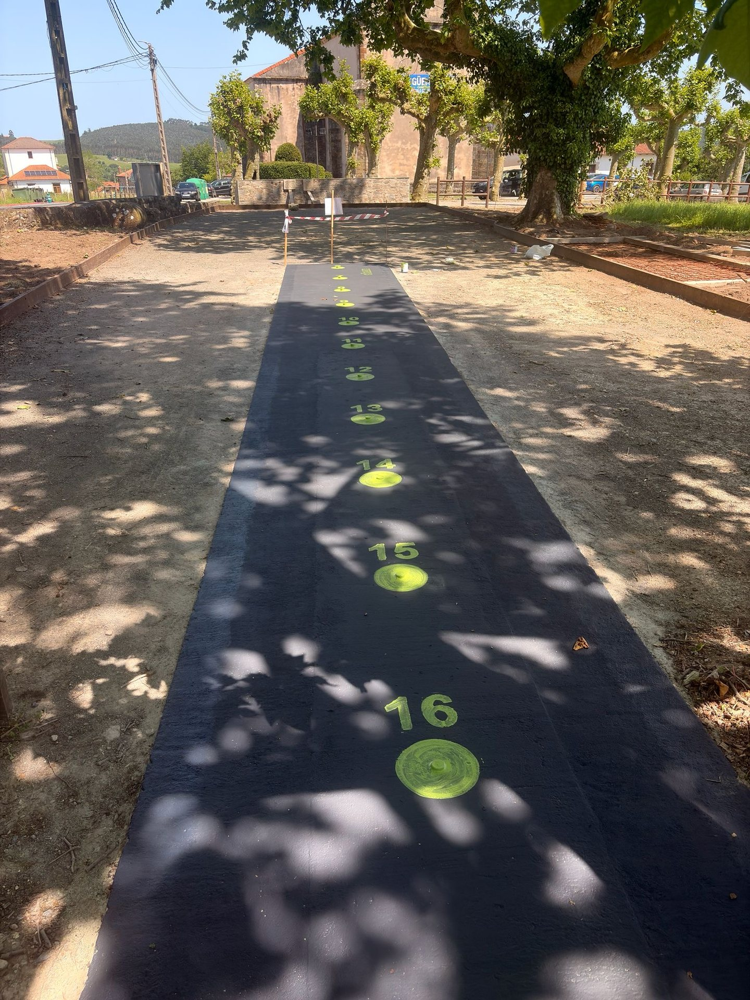

Recuperación y puesta en valor de la bolera de Güemes como espacio de encuentro vecinal, deportivo e intergeneracional — coronado por una composición artística hecha con bolas de silo reutilizadas.
15.000 €
presupuesto
Bloque C
aporte físico
8
actuaciones
5+
usos del espacio
Resumen ejecutivo
El Bloque C de la candidatura se concreta como un aporte físico al pueblo: la recuperación, acondicionamiento y puesta en valor de la bolera de Güemes, un espacio tradicional de gran relevancia patrimonial, deportiva y social, con el fin de consolidarlo como lugar de encuentro, convivencia y desarrollo de actividades culturales al aire libre.
Todas las intervenciones se realizan respetando la estética tradicional de Güemes y su integración en el entorno rural. Como elemento singular y en continuidad con el programa «Enróllate en Güemes», se incorpora una composición artística semipermanente realizada con bolas de silo reutilizadas.
La idea en una frase: recuperar la bolera como corazón social del pueblo — un espacio para el bolo palma, los conciertos de pequeño formato y los encuentros vecinales, coronado por una obra de arte hecha con bolas de silo que da una segunda vida a un material del medio rural.

La bolera de Güemes — el tiro acondicionado para el bolo palma, con la iglesia del pueblo al fondo.
Actuaciones previstas
La actuación comprende un conjunto de obras físicas permanentes sobre el recinto de la bolera y su entorno inmediato:
Cerramiento en tapia de piedra
Construcción de un cerramiento tradicional en la parte posterior del recinto.
4.000 €
Mejora del tiro de la bolera
Aporte de materiales adecuados y acondicionamiento de la superficie de juego.
2.500 €
Alumbrado
Instalación de farolas para el uso del espacio en horario de tarde-noche.
2.000 €
Base de hormigón
Plataforma destinada a la instalación del mobiliario urbano.
1.500 €
Mobiliario urbano
Colocación de dos bancos y una papelera de estética tradicional.
1.200 €
Composición artística
Bolas de silo reutilizadas como elemento ornamental e identitario.
1.300 €
Zona de estancia y observación
Asientos de troncos de madera dispuestos sobre la tapia existente.
1.000 €
Señalización e integración
Señalética e integración estética del conjunto en el entorno rural.
800 €
Zona de estancia: la instalación de asientos de troncos sobre la tapia existente crea una grada natural que favorece la participación y el disfrute de vecinos y visitantes durante las partidas de bolos y los eventos culturales y comunitarios.
Continuidad artística · bolas de silo
En continuidad con el espíritu del proyecto «Enróllate en Güemes», se instala de forma semipermanente una composición artística realizada con bolas de ensilado reutilizadas. Esta intervención permite dar una segunda vida a materiales vinculados al medio rural, convirtiéndolos en un elemento ornamental e identificativo del espacio.
Por qué encaja: refuerza la identidad visual de la localidad y promueve valores de sostenibilidad, creatividad y respeto por las tradiciones rurales, manteniendo el guiño artístico que dio origen al nombre del bloque — ahora como elemento estable y duradero, no como evento efímero.
La bolera hoy
Imágenes del estado actual de la bolera de Güemes: el tiro con las dianas del bolo palma, el entorno arbolado junto a la iglesia y el alumbrado nocturno. La actuación parte de este espacio para consolidarlo como lugar de encuentro vecinal, deportivo e intergeneracional.